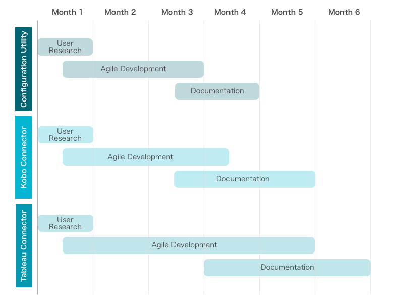

Executive Summary
BAO Systems is pleased to present its proposal to develop a DHIS 2 Utility Suite in response to the Digital Square Notice C - Open call for Global Goods.
DHIS 2 is a flexible, open source health information system that allows users to collect, manage, and visualize data. Originally created to support the management of aggregate health data in low-resource settings, the use of DHIS 2 has expanded into other sectors and additional use cases due to its highly flexible and configurable nature, robust database structure, and ability to scale and interoperate. Through first hand experience with clients and feedback from other organizations, we identified a demand for: more efficient administration and configuration, integration with other data collection platforms, and the ability to perform more advanced analytics through connectivity with more advanced business intelligence (BI) tools. While DHIS 2 natively supports some of this functionality, it is limited in its capabilities.
To address these needs, BAO Systems proposes to fortify DHIS 2 with a suite of tools and utilities that will increase efficiency and simplify process for users concerned with DHIS 2 configuration and data analytics. This suite of tools and utilities will target individuals responsible for system configuration and for those interested in data interpretation. The solutions would not only conserve precious organization resources, but help increase the insights derived from their data and better inform decision making as it relates to their programs and goals. BAO Systems will deliver these tools and utilities in a timely manner and provide the software, documentation, and promotion of the solutions to the community.
Consortium Team
BAO Systems
BAO Systems is a leading technology firm that provides health information system (HIS) design, support, and development through managed, cloud-hosted solutions that enable governments and organizations in low-resource settings to sustainably monitor and manage data to improve outcomes. Founded in 2012, BAO Systems has become the largest US-based DHIS 2 consulting and hosting firm in North America. We work at a global scale and use open source software solutions to tackle the tough challenges faced by organizations across a variety of sectors including health, education, sanitation, refugee assistance, and nutrition. Our organization is part of the Open Health Information Exchange (OHIE) community and is committed to data accessibility beyond platform silos.
Our team has extensive experience working with and for governments, non-governmental organizations, and in the private sector around the world. BAO's team consists of software developers, data scientists, system administrators, as well as HIS and program monitoring and evaluation specialists with experience working in LIC/LMICs across South/Latin America, Africa, Asia, and the Middle East. We are well versed in governance, compliance, and data and information security and have deep technical expertise in application development, hosting, and technical assistance. With this diverse expertise, we are uniquely positioned to understand the unique challenges our clients face and implement lasting, effective solutions that meets client needs.
University of Oslo
The University of Oslo (UiO) is home to the Health Information Systems Program (HISP). HISP at UiO is one of the leading organizations in HIS strengthening and conducts in-country capacity building and implementation support, research, a PhD program, and hosting the core DHIS2 software development team. HISP coordinates DHIS2 development, an open process with developers in Norway, India, Vietnam, Tanzania, Ireland, and the United States. The core development team at UiO, focuses primarily on developing and maintaining a robust API and backend, setting the development roadmap, developing and maintaining core, generic applications, fixing bugs, and performing system stabilization.
BAO Systems, Population Services International (PSI), and the UiO are a current holder of a Digital Square Notice B award, focusing on the development of a Power BI to DHIS 2 connector.
Key Personnel
Peter Galletta, ProductsDirector (BAO Systems). Mr. Galletta has over 20 years experience in the design, development and management of feature rich web-based applications. Mr. Galletta will have overall technical responsibility for product development, including conducting user research, documenting product requirements, determining specifications, and ensuring that production timetables are met in a timely and high quality manner. Tasks will include leading user research and requirements gathering, developing and assigning product development tasks, ensuring that product development tasks are completed in a timely manner with high quality, and oversee user testing.
Katherine Lew, Products Liaison Senior Manager (BAO Systems). Ms. Lew brings over 13 years of public health experience with emphasis in health information systems, data management, and data analytics, visualization and use. Before joining BAO Systems, she supported NGO country programs and headquarters with customization and implementation of data analytics platforms to improve data use for program adaptive management and improvement. Having worked in multiple countries across Asia and Africa, she has keen insight into the business requirements of our clients. Katherine holds a BS in Molecular Biology and a Masters of Public Health, specializing in international health. Ms. Lew will support monitoring project plans, schedules, work hours, budgets, and expenditures, and ensuring that project deadlines are met in a timely manner. Tasks include organizing and participating in stakeholder meetings, maintaining open communication between project staff and Digital Square, and follow up with project staff to ensure that project deliverables are met.
Dan Cocos, Senior System Administrator (BAO Systems). Mr. Cocos leads the systems team and is responsible for BAO Services’ hosting services, keeping our clients’ DHIS 2 servers secure and reliable. With over five years of DHIS 2 experience he also works closely with clients and the DHIS 2 Development team to ensure smooth upgrade paths and development of future features. Having extensive experience in both the public and private sectors, he has been exposed to a variety of clients such as The Census Bureau,The National Education Association, and Orbitz. He holds a BBA in Systems Analysis from the University of Wisconsin. Mr. Cocos will serve as the lead System Administrator for this project, though may task his team members with day-to-day responsibilities. The System Administrator will ensure that DHIS 2 production instances are well maintained and operate reliably. Tasks will include performing regular systems and security monitoring, handling backup procedures and helping set up, maintain and delete user accounts as required.
Jennifer Jones Arnesen, Senior Software Engineer (BAO Systems). Ms. Arnesen is a senior frontend web developer, based in Oslo, Norway with 20 years experience in software development, in industries such as environmental consulting, education, and media streaming. At BAO Systems, she focuses on building analytics apps for the core DHIS 2 platform. She holds a BA in biochemistry from the University of Colorado. Ms. Arnesen will serve as the lead Software Engineer, though may task specific technical deliverables to a pool of software engineers. The appointed software engineers will work together with the Product Manager and User Experience Designer to design and develop the product(s), and iterate upon it in accordance with user-testing. Tasks will include participation in user research and requirements gathering and test development in an agile environment.
TBD, User Experience Designer (BAO Systems), will be responsible for the design the overall functionality of the product(s), and in order to ensure a great user experience, iterate upon it in accordance with user-testing. Tasks will include participation in user research and requirements gathering and translating them into sitemaps, user flows, customer journey maps, wireframes, mockups and prototypes.
Pool, Community Liaison (UiO), will support identification of specific use cases and community feedback in the proposed utilities/tools. The UiO maintains a community newsletter, communication with the various Health Information System Programme offices, and has worldwide presence.
Project Description
Background
DHIS 2 is a flexible, open source health information system that allows users to collect, manage, and visualize data. Originally created to support the management of aggregate health data in low-resource settings, the use of DHIS 2 has expanded into other sectors and additional use cases due to its highly flexible and configurable nature, robust database structure, and ability to scale and interoperate. As a result, DHIS 2 has been widely adopted by numerous Ministries of Health, development partners, and non-governmental organizations in over 60 countries, with thousands of instances and tens of thousands of individual users comprising data entry clerks, data scientists, M&E specialists, and program managers. With its quickly growing and diverse user base, the number of demands for enhanced functionality has grown. Core DHIS 2 developers continue to have a robust roadmap, however are not able to all of the community's demands.
With its unique position in supporting a wide range of NGOs in configuring and hosting DHIS 2 instances, BAO Systems has identified a number of community demands which it would like to address:
- More efficient administration and configuration: During the setup and configuration of a new DHIS 2 instance, the creation of metadata objects can be time consuming and tedious depending on an organizations' structure and management.
- Integration with other data collection platforms: Many organizations use Open Data Kit v.2 (ODK) based tools, such as KoboToolbox and Ona for mobile data collection. While these tools are easy to use and offer the necessary user interface for data collection, users struggle with finding equally easy solutions for analyzing the often complex datasets collected.
- The ability to perform more advanced analytics through connectivity with more advanced business intelligence (BI) tools: Though DHIS 2 offers a robust and often times sufficient analytics application, a number of organizations have expressed the need to connect their DHIS 2 datasets with more advanced business intelligence tools such as Tableau. Not only would this extend the analytic features available, but it would also enable organizations to mashup their data with data sources collected and managed in other software.
While DHIS 2 natively supports some of this functionality, it is limited in its capabilities. However, due to the extensive REST-based Web API, DHIS 2 functionality is highly extensible and more advanced solutions are possible to implement and integrate with the platform.
Technical Approach and Digital Health Technologies Integration
BAO Systems proposes a suite of tools and utilities to address the challenges faced by many DHIS 2 users, which will target individuals responsible for system configuration and data analysis, interpretation, and use. The solutions outlined below will be interwoven with DHIS 2, an existing Digital Health Technology.
BAO Systems is currently developing proof of concept solutions to address multiple challenges and would like to further extend the functionality; fortify the development, user experience, documentation and release; and promote these solutions to the public health community. Since NGOs, international agencies, and governments have already made sizable investments in existing technology (software, infrastructure and training), BAO Systems believes our suite of tools can assist with integration and interoperability between DHIS 2 and existing commonly used technologies without adding additional technology burden.
For each utility/tool developed, the BAO team will follow a phased approach, as described below. Development of the three utilities/tools will occur concurrently, and phases may overlap.
Phase 1: User research and requirements gathering. BAO Systems will compile research and user requirements through interviews with key stakeholders and target users to fully understand and document their specific needs with respect to each proposed utility/tool. Information that will be distilled out during this phase will include: user goals, system components, main capabilities and the reason for needing them, target users and capabilities, a plan for system maintenance and support, system architecture, and assumptions and dependencies.
Phase 2: Product development and testing. The bulk of the implementation timeline will be used to implement an agile product development methodology, whereby the team will iteratively implement a cycle of development→development→testing→delivery→feedback. During this time, we will identify concrete use cases in which the products will be tested to ensure that the final products meets the requirements identified during Phase 1, as well as ensures that any system bugs are addressed prior to release. BAO Systems will obtain feedback on the user interface, user experience, and functionality of the the utilities/tools. Feedback will be incorporated into any further development prior to product release.
Phase 3: Documentation. Throughout the research and development process, BAO Systems will ensure that proper documentation is maintained, including user requirements, development processes, and testing conducted.
At the end of the anticipated 6-month timeline, BAO will be prepared for product release and promotion. A number of dissemination and promotion channels have been identified, and include, but is not limited to:
- Posting documentation on BAO’s website, the DHIS 2 App Store and other DHIS 2 community channels
- Leverage existing relationships with NGOs
- Share/present at industry events such as:
- The annual DHIS 2 Symposium, hosted by the UiO and BAO Systems in Washington, D.C. The DHIS 2 Symposium has been hosted since 2014, and gathers NGOs implementing health and nutrition programming globally.
- The annual DHIS 2 Experts Academy, hosted by the UiO in Oslo, Norway. The 2018 Experts Academy brought together over 200 participants from 85 organizations, including governments, implementing partners, and the WHO, UNICEF, and PEPFAR.
- The annual MERLTech conference held in Washington, D.C.
Configuration Utility
To increase efficiency of the DHIS 2 setup process, we propose a one-stop, user-friendly configuration tool, meant for the bulk creation of metadata objects in DHIS 2. The utility is intended to be the singular tool needed for the ‘out of the box’ configuration of a DHIS 2 system. The metadata import is ‘user-friendly’ because it masks the complicated and often times messy API interactions.
The configuration will help mitigate the following admin issues:
- Speed: The graphic user interface, whilst user-friendly, does not allow for a quick configuration process of the large number of objects required to build a functioning database. For e.g., one org unit would take 30-60 seconds to create. Most organisations have a hierarchy consisting of ~1000 org units. That is ~16.5 peron hours just to create one of nearly 20 metadata considerations for a small sized aggregate DHIS2 configuration.
- Interdepence: Difficulty keeping track of interdependent objects built one-by-one in the system
- Versioning: Metadata during configuration, testing and rollout goes through rounds of natural iteration that are nearly impossible to manage through the front-end
- Quality-control: Incremental database changes through the front-end would require coordinating multiple resource inputs, making it difficult to maintain an overall quality control.
- Editing: When configuring manually in the system, every dependence is impacted, meaning it is essential to plan to the end before doing anything in the system to make a database as clean as possible. Minor manual edits introduce mess within the back-end of the database.
- Updating: Having once made an object, updating it requires a lengthy process of remembering what it was called, the type of object, it’s details, navigating to it and making the required change.
The metadata configuration utility will be developed as a native app within the DHIS 2 environment, installed via the existing App Management workflow within DHIS 2. Once installed, the end user simply needs to create a standard format CSV file to be uploaded through the app to import the values.
The utility will support the following modules:
- Organization Loader - This module is used to upload a flattened organisation layout CSV file, to create and update organisation units.
- Category Power Loader - This module is used to upload categories, category options and combos CSV file, to create and update them in the DHIS 2.
- Indicator Loader - This module uploads the Indicators CSV file, it creates, updates and assigns them to specified datasets.
- Power Group Loader - This module uploads different kinds of groups as specified in the CSV file, it links existing child records.
- Translations - This module uploads a CSV file to add, update and delete translations.
- Sharing - This module uploads CSV file that allows objects to be shared within DHIS 2. It creates and updates the external access, public access, and specific user groups with which you will like to share an object.
- Style Loader - It uploads a new CSS stylesheet.
- UID Generator - UIDs are important in the configuration of metadata in the DHIS 2, to help keep track of objects to enable use in other modules, one is advised to include UIDs during configuration. This module enables you to generate between one and 100 UIDs at a time.

ODK Connector
Many organizations who use Open Data Kit (ODK) based tools, such as KoboToolbox and Ona for mobile data collection would like to use the data analytics tools freely available within DHIS 2. We are proposing a utility to allow the user to pull data from ODK based tools, like KoBoToolbox into DHIS 2 with minimal user interaction. KoBo collected data can then be analyzed with the analytic tools from DHIS 2.
This will ultimately enable the user to freely interact with and analyze the dataset within DHIS 2. The connector will use a packaged native app within DHIS 2 to use the API to create metadata according to a standard defined during development, then push data values as Events for the newly created DHIS 2 Programs without registration. The connector will integrate natively with the ODK tool by having the user authenticate for the first use. Next the user would select the appropriate ODK forms they wish to import, and finally select the data elements they wish to import to DHIS 2. An initial import would either create the data elements in DHIS 2 or allow the user to map to existing data elements. Once a sync is setup, a scheduler can be run the imports at set intervals.

Tableau Connector
We are proposing a "connector" utility to allow users to connect the data in their DHIS 2 instance to Tableau in order to create data mashups and perform more advanced analytics. In collaboration with the Tableau Foundation, BAO Systems has developed a working prototype of a Tableau Connector that was fully self-funded by BAO Systems. Our team has solicited feedback from audiences at the DHIS 2 Symposium in 2018, the recent DHIS 2 Experts Academy, and our existing client base. Based on that feedback, we identified the need to continue development to fortify the code base, improve the user experience, and complete documentation before making it more widely available to the community.
Some of the core operations a user should be able to accomplish:
- Quickly connect to a subset of their data and ask iterative questions
- Create indicators and expressions on the fly
- Perform cross database joins or data blends to other sources of data (e.g., financials stored outside DHIS2)
- Build interconnected, dynamic dashboards to allow drill-down
- Allow rapid reporting on this data to program staff and external partners
The technical approach of the Tableau connector will utilize the web data connector within Tableau to connect to the data of an organizations desired DHIS2 instance. BAO Systems will develop an easy to use interface to allow a user an intuitive way to authenticate, then select which data elements they want to pull into Tableau to analyze and interrupt.


Workplan and Schedule
The proposed implementation timeline of this project is about six months.

Configuration Utility
Phase 1: User research and requirements gathering will commence at project start and last 4 weeks. At the end of Phase 1, BAO Systems will have completed stakeholder interviews and user requirements documentation.
Phase 2: Product development and testing will consume the majority of the implementation timeline, lasting about 10 weeks and occurring concurrently with Phases 1 and 3.. During this phase, the development team will iterate through multiple cycles of design, development, testing, and quality assurance to ensure that development is appropriately meeting user needs.
Phase 3: Documentation will take approximately 5 - 6 weeks to complete, and will overlap with Phase 2.
ODK Connector
Phase 1: User research and requirements gathering will commence at project start and last 4 weeks. At the end of Phase 1, BAO Systems will have completed stakeholder interviews and user requirements documentation.
Phase 2: Product development and testing will consume the majority of the implementation timeline, lasting about 12 weeks and occurring concurrently with Phases 1 and 3.. During this phase, the development team will iterate through multiple cycles of design, development, testing, and quality assurance to ensure that development is appropriately meeting user needs.
Phase 3: Documentation will take approximately 6 - 8 weeks to complete, and will overlap with Phase 2.
Tableau Connector
Phase 1: User research and requirements gathering will commence at project start and last 3 weeks. At the end of Phase 1, BAO Systems will have completed stakeholder interviews and user requirements documentation.
Phase 2: Product development and testing will consume the majority of the implementation timeline, lasting about 12 - 14 weeks and occurring concurrently with Phases 1 and 3.. During this phase, the development team will iterate through multiple cycles of design, development, testing, and quality assurance to ensure that development is appropriately meeting user needs.
Phase 3: Documentation will take approximately 6 - 8 weeks to complete, and will overlap with Phase 2.
Project Deliverables
This project will produce the following deliverables, listed below by utility/tool:
Configuration Utility
Deliverable | Timeframe |
|---|
User research conducted and documented | End of Month 1 |
Product developed and released | Month 2 - 5 |
Documentation completed and made available | Month 4 - 5 |
ODK Connector
Deliverable | Timeframe |
|---|
User research conducted and documented | End of Month 1 |
Product developed and released | Month 2 - 4 |
Documentation completed and made available | Month 4 - 5 |
Tableau Connector
Deliverable | Timeframe |
|---|
User research conducted and documented | End of Month 1 |
Product developed and released | Month 2 - 6 |
Documentation completed and made available | Month 5 - 6 |
2-sentence Overview
BAO Systems' proposed project will further extend DHIS 2 functionality, fortify the development, user experience, documentation and release, and promote these solutions to the public health community through the development of three utilities: Configuration Utility, ODK Connector, and a Tableau Connector.
Community Feedback
As part of Phases 1 and 2, the team will conduct user research, testing, and feedback on the overall architecture, design and use case alignment of the three utilities developed. Furthermore, BAO Systems will continue to seek feedback on the products after release at the various industry events mentioned above as well as through our regular contact with clients. BAO Systems is committed to ensuring that these product continue to meet user needs as they evolve.
Use Cases
Configuration Utility
The concept for the configuration utility is intended to be a one-stop metadata configuration app for the bulk import of DHIS2 metadata via csv (comma separated variable) templates. This means that from empty to configured database a user interacts with the configuration utility to:
- Bulk import: Import large numbers of objects into DHIS2 at a single click to avoid lengthy configuration time
- Arrange work and dependencies:Use of the csv templates enables creation of objects in an arranged fashion prior to importation into the system. The templates also enable a visual layout of what is going into the system to easily standardise object naming and properties.
- Easily update and edit: Imported objects can be assigned UIDs that mean a simple edit in the template followed by re-import enables large-scale editing.
- Build intuitively: Each successive object created through the configuration utility may draw upon previously created objects. Having the details in templates quickly references those objects.
The proof of concept contains modules capable of creating a complete aggregate configuration: from category options through to data set sections, indicators, translations and sharing. The configuration utility is also capable of creating the majority of both Event and Tracker programs: from data elements to program stage sections. Additionally, the configuration utiltiy is exceptionally powerful for integration projects as it enables to importation of mapped values against object-specific attributes for the creation of integration routes for data transfer.
To be a comprehensive one-stop shop for metadata configuration, we envisage the configuration tool being improved with:
- New modules for the creation of the remaining “program” related items: Option sets and Tracked entity attributes
- Addition of features into pre-existing modules to bring them in line with new features in latest releases: attributes for all object types, colours and icons for android apps, data sharing levels for data capture and more
- Incorporation of user group and user creation modules for the bulk creation of users (an often long and drawn out process for large organisations.)
- Standardisation of import and output formats, dry run functionality, error logs and help texts
- Accompanying template ‘books’ that provide pre-existing templates for all objects on an ‘as-needed’ basis.
ODK Connector
The ODK Connector allows organizations a simplified method to integrate ODK collected data with the current analytics of DHIS 2 and use the analytics tooling of DHIS 2 for analysis, thus alleviating the lack of data analysis functionality in ODK. It enables analysis of surveys and other data collection methods designed with ODK.
Because the ODK API is quite different from DHIS2 API (e.g. one thing is the "select many options in a question" which is just not possible with DHIS2), we had to define a strict scheme on how data will be imported (e.g. all metadata must be affixed with `KB-` etc.). This means it is not very flexible on how it's imported.
Tableau Connector
Tableau is an industry leader in visualization and analytics. Many organizations desire to do more than what can be done native in DHIS 2 and want an easy and reliable way to get DHIS 2 data into Tableau desktop. Additionally, with a majority of data and DHIS 2 expertise residing with the country teams, other stakeholders (i.e. HQ) often struggle to gain access or have the proper training to use the built-in data analytics tooling of DHIS 2. The Tableau connector allows for access and interpretation with little to no experience with the core DHIS 2 instance where the data resides.
Once connected, the connector allows for the user to gather and model data together, that come from different sources (DHIS 2 being one source) within more powerful graphing and visualization toolset.
Self-Assessment on the Global Goods Maturity Model
Attached as PDF
Tagging
#DHIS2, #dataanalytics, #interoperability, #configuration, #businessintelligence, #Tableau, #KoBoToolbox, #ODK, #ona